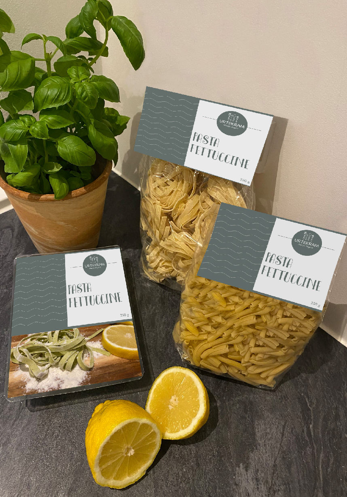

SOMMER PASTA


Lækker sommerpasta
Mad til 4 personer - Tilberedning: 15 min. - I alt: 15min.
Ingredienser du skal bruge:
3500 g pasta fettuccine
1 løg, snittet
2 fed hvidløg, finthakket
2 stk. avokado
1 spsk olivenolie
250 g grønne asparges
100 g cherrytomater
1 dl piskefløde
70 g parmesan, friskrevet
Salt og peber
Fremgangsmåde:
Start med at koge pastaen til den er al dente. Svits derefter løg og hvidløg på panden med en smiule olivenolie.
Tilsæt fløde og grøntsager, undlad dog at tilsætte avokadoerne. Lad det simre i 5 min.
Bland tilsidst avokado i og top med tomater. Velbekomme!